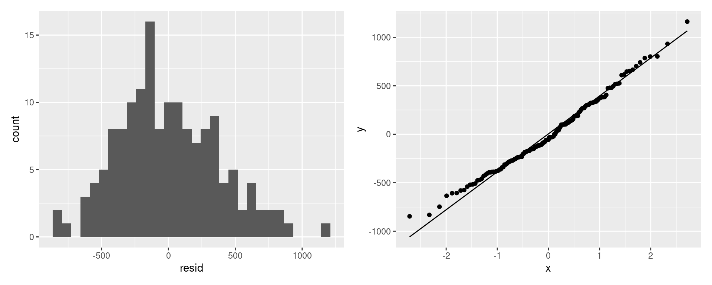
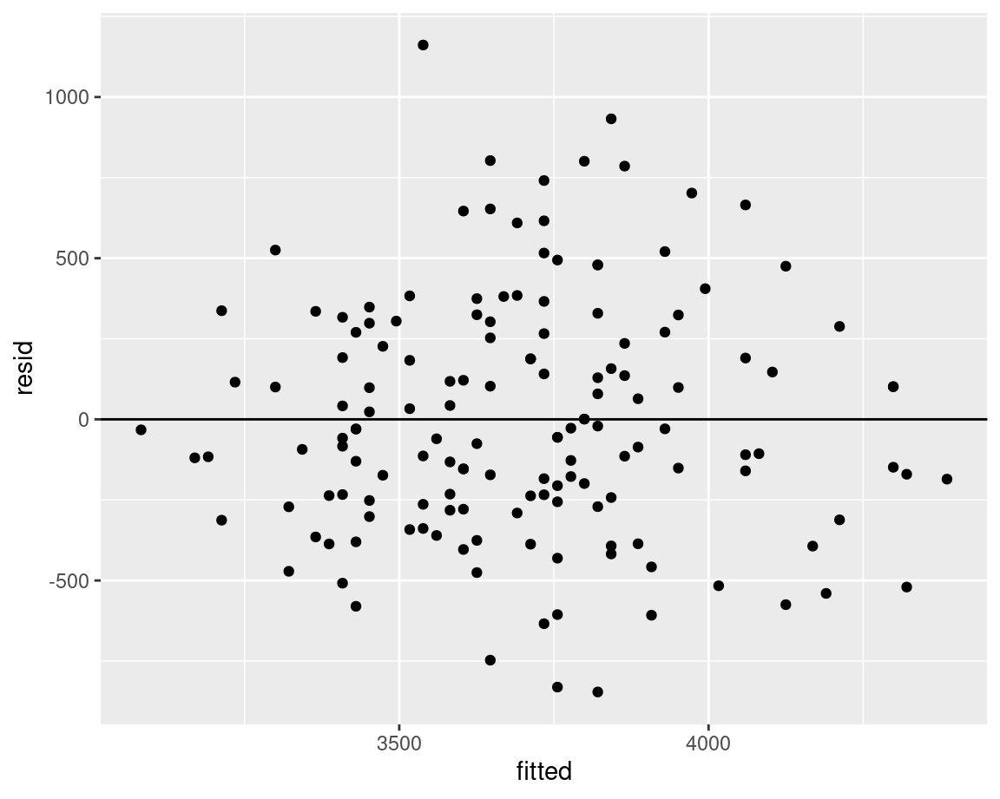
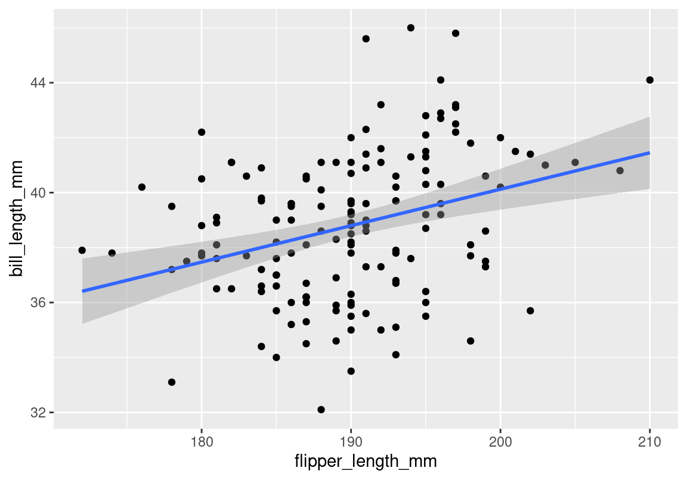
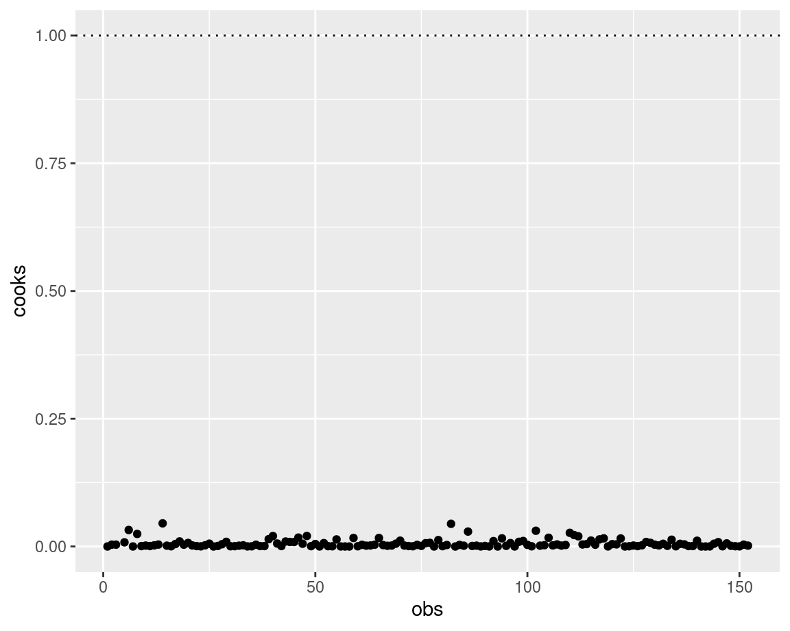
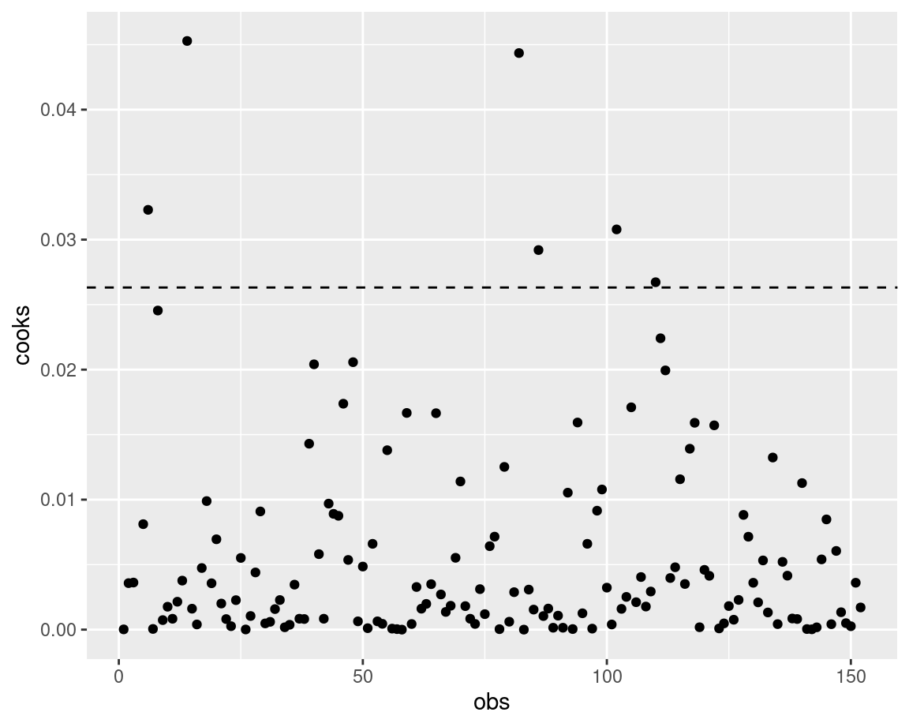

library(palmerpenguins) # For penguins data set
library(dplyr) # For data manipulation
# We'll only use Adelie penguins for now
p <- filter(penguins, species == "Adelie")
# Run model
m <- lm(body_mass_g ~ bill_depth_mm, data = p, na.action = na.exclude)
# Extract residuals and fitted values
p <- mutate(p,
resid = residuals(m), # Residuals
fitted = fitted(m), # Fitted values
cooks = cooks.distance(m), # Cook's distance
obs = 1:n()) # Observation idsDiagnostics for Simple Linear Models
stats
lm
vif
normality
diagnostics
residuals
cooks-d
R
All models have assumptions and cautions. Understanding whether you’ve satisfied these assumptions and checking for potential problems are some of the hardest things to do in statistics.
For simple linear models (lm()) the main assumptions are
-
Linear relationship between response (
y) and predictors (x’s). -
Independence - Observations are independent
- no hierarchical sampling, no nested designs, no variables are calculated from each other
- Normality - Residuals are normally distributed
- Constant variance - There is constant variance in residuals (no heteroscedasticity)
Note that it’s the normality of residuals and NOT the raw data that matters
And the main cautions are
-
Multicollinearity - You don’t want high levels of multicollinearity
- When predictors are highly correlated they can to influence the parameters calculated
-
Influence - You don’t want one or two points have an undue influence on your model
- Otherwise you should think about how relevant (and generalizable) that model really is
Diagnostics in R
Some assumptions/cautions are those of design (i.e. Independence), and some are assessed by evaluating your model fit in R. Some, like the expectation of a Linear Relationship, can be assessed in different ways, by plotting your relationship, or by looking at your residuals (as if there’s a problem, you’ll see problems in the Normality and Variance of your residuals).
In R, we can extract the residuals (residuals()) and fitted (fitted()) values to assess Normality and Constant variance. We can also use functions like vif() and cooks.distance() to calculate metrics which will help us assess Multicollinearity and Influential observations.
Let’s extract and calculate the observation-level values we’ll need for these assessments.
Assessing Assumptions
We use residuals to look at this fit.
What are residuals?
For a simple linear model, residuals are essentially the error between your observations and your model. Fitted values are the predicted value of your response given the model and your explanatory values.
For example, in this linear model looking at the relationship between body_mass_g and bill_depth_mm in Adelie penguins, we can picture the residuals as the degree of difference between the model line and our data points.
Code
library(patchwork) # To combine plots
library(ggplot2) # For plotting
library(tidyr) # For data manipulation
# Model plot
g1 <- ggplot(data = p, aes(x = bill_depth_mm, y = body_mass_g)) +
stat_smooth(method = "lm", se = FALSE, colour = "black") +
geom_point(size = 2)
# Add residuals
g2 <- g1 +
geom_segment(aes(xend = bill_depth_mm, yend = fitted, colour = resid), size = 1) +
scale_colour_viridis_c()
g1 + g2
Normality
We want our residuals from our model to be normally distributed. We can use a histogram or a QQ plot to assess this based on the residuals we extract from the model.
# Histogram
g1 <- ggplot(data = p, aes(x = resid)) +
geom_histogram()
# QQ Plot
g2 <- ggplot(data = p, aes(sample = resid)) +
stat_qq() +
stat_qq_line()
g1 + g2
Looks good!
Constant variance
We want the variability in our model residuals to be relatively constant (or at least to not show any definied patterns). It shouldn’t increase or decrease with the fitted values, and should be relatively scattered throughout. We can plot the residuals by fitted values to make sure we don’t see any patterns.
We’re checking for heteroscedasticity
ggplot(data = p, aes(x = fitted, y = resid)) +
geom_point() +
geom_hline(yintercept = 0)
Looks good!
Check for problems
Multicollinearity
Multicollinearity assess whether your explanatory variables are overly correlated. This means it only applies if you have a multiple regression (i.e.. where you have more than one explanatory variable).
Let’s consider this model
m2 <- lm(body_mass_g ~ bill_depth_mm + flipper_length_mm, data = p, na.action = na.exclude)Look at our two explanatory variables
ggplot(data = p, aes(x = flipper_length_mm, y = bill_length_mm)) +
geom_point() +
stat_smooth(method = "lm")
They are definitely correlated, but that doesn’t mean we have a problem. We need to investigate if it interferes with the model.
There are several ways to assess multicollinearity. Here we’ll use vif()1 function from car package.
Although with all statistical measures, there is no magic number, generally a VIF > 10 is considered a problem, and VIF > 5 is concerning.
So in this case we can assume that while there is a correlation, it’s not haveing an undue effect on how we interpret the model.
Influence
You’ll want to check if your model results are highly influenced by any specific observations. For example, if you remove one observation and the entire model changes, you’ll have to think about how generalizable that model really is.
One way of checking whether any observations have an unusually high influence on your model is to look at the Cook’s distance (D).
There are several ways of considering what D is too high. One is that D below 1 is good, the other is that you should aim for a D below 4 / no. observations.
g <- ggplot(p, aes(x = obs, y = cooks)) +
geom_point()
g + geom_hline(yintercept = 1, linetype = "dotted")
g + geom_hline(yintercept = 4/nrow(p),
linetype = "dashed")
All in all, having a high D doesn’t mean you automatically remove the observation, it means you think about what influence that observation is having on your model. Try omitting it and see how your model changes!
Session Info
devtools::session_info()─ Session info ───────────────────────────────────────────────────────────────
setting value
version R version 4.3.1 (2023-06-16)
os Ubuntu 22.04.3 LTS
system x86_64, linux-gnu
ui X11
language en_CA:en
collate en_CA.UTF-8
ctype en_CA.UTF-8
tz America/Winnipeg
date 2023-09-04
pandoc 3.1.1 @ /usr/lib/rstudio/resources/app/bin/quarto/bin/tools/ (via rmarkdown)
─ Packages ───────────────────────────────────────────────────────────────────
package * version date (UTC) lib source
abind 1.4-5 2016-07-21 [1] CRAN (R 4.3.0)
cachem 1.0.8 2023-05-01 [1] CRAN (R 4.3.0)
callr 3.7.3 2022-11-02 [1] CRAN (R 4.3.0)
car * 3.1-2 2023-03-30 [1] CRAN (R 4.3.0)
carData * 3.0-5 2022-01-06 [1] CRAN (R 4.3.0)
cli 3.6.1 2023-03-23 [1] CRAN (R 4.3.0)
colorspace 2.1-0 2023-01-23 [1] CRAN (R 4.3.0)
crayon 1.5.2 2022-09-29 [1] CRAN (R 4.3.0)
devtools 2.4.5 2022-10-11 [1] CRAN (R 4.3.0)
digest 0.6.31 2022-12-11 [1] CRAN (R 4.3.0)
dplyr * 1.1.2 2023-04-20 [1] CRAN (R 4.3.0)
ellipsis 0.3.2 2021-04-29 [1] CRAN (R 4.3.0)
evaluate 0.20 2023-01-17 [1] CRAN (R 4.3.0)
fansi 1.0.4 2023-01-22 [1] CRAN (R 4.3.0)
farver 2.1.1 2022-07-06 [1] CRAN (R 4.3.0)
fastmap 1.1.1 2023-02-24 [1] CRAN (R 4.3.0)
fs 1.6.2 2023-04-25 [1] CRAN (R 4.3.0)
generics 0.1.3 2022-07-05 [1] CRAN (R 4.3.0)
ggplot2 * 3.4.2 2023-04-03 [1] CRAN (R 4.3.0)
glue 1.6.2 2022-02-24 [1] CRAN (R 4.3.0)
gtable 0.3.3 2023-03-21 [1] CRAN (R 4.3.0)
htmltools 0.5.5 2023-03-23 [1] CRAN (R 4.3.0)
htmlwidgets 1.6.2 2023-03-17 [1] CRAN (R 4.3.0)
httpuv 1.6.9 2023-02-14 [1] CRAN (R 4.3.0)
jsonlite 1.8.4 2022-12-06 [1] CRAN (R 4.3.0)
knitr 1.42 2023-01-25 [1] CRAN (R 4.3.0)
labeling 0.4.2 2020-10-20 [1] CRAN (R 4.3.0)
later 1.3.0 2021-08-18 [1] CRAN (R 4.3.0)
lattice 0.21-8 2023-04-05 [4] CRAN (R 4.3.0)
lifecycle 1.0.3 2022-10-07 [1] CRAN (R 4.3.0)
magrittr 2.0.3 2022-03-30 [1] CRAN (R 4.3.0)
Matrix 1.6-0 2023-07-08 [4] CRAN (R 4.3.1)
memoise 2.0.1 2021-11-26 [1] CRAN (R 4.3.0)
mgcv 1.9-0 2023-07-11 [4] CRAN (R 4.3.1)
mime 0.12 2021-09-28 [1] CRAN (R 4.3.0)
miniUI 0.1.1.1 2018-05-18 [1] CRAN (R 4.3.0)
munsell 0.5.0 2018-06-12 [1] CRAN (R 4.3.0)
nlme 3.1-162 2023-01-31 [4] CRAN (R 4.2.2)
palmerpenguins * 0.1.1 2022-08-15 [1] CRAN (R 4.3.0)
patchwork * 1.1.2 2022-08-19 [1] CRAN (R 4.3.0)
pillar 1.9.0 2023-03-22 [1] CRAN (R 4.3.0)
pkgbuild 1.4.0 2022-11-27 [1] CRAN (R 4.3.0)
pkgconfig 2.0.3 2019-09-22 [1] CRAN (R 4.3.0)
pkgload 1.3.2 2022-11-16 [1] CRAN (R 4.3.0)
prettyunits 1.1.1 2020-01-24 [1] CRAN (R 4.3.0)
processx 3.8.1 2023-04-18 [1] CRAN (R 4.3.0)
profvis 0.3.7 2020-11-02 [1] CRAN (R 4.3.0)
promises 1.2.0.1 2021-02-11 [1] CRAN (R 4.3.0)
ps 1.7.5 2023-04-18 [1] CRAN (R 4.3.0)
purrr 1.0.1 2023-01-10 [1] CRAN (R 4.3.0)
R6 2.5.1 2021-08-19 [1] CRAN (R 4.3.0)
Rcpp 1.0.10 2023-01-22 [1] CRAN (R 4.3.0)
remotes 2.4.2 2021-11-30 [1] CRAN (R 4.3.0)
rlang 1.1.1 2023-04-28 [1] CRAN (R 4.3.0)
rmarkdown 2.21 2023-03-26 [1] CRAN (R 4.3.0)
rstudioapi 0.14 2022-08-22 [1] CRAN (R 4.3.0)
scales 1.2.1 2022-08-20 [1] CRAN (R 4.3.0)
sessioninfo 1.2.2 2021-12-06 [1] CRAN (R 4.3.0)
shiny 1.7.4 2022-12-15 [1] CRAN (R 4.3.0)
stringi 1.7.12 2023-01-11 [1] CRAN (R 4.3.0)
stringr 1.5.0 2022-12-02 [1] CRAN (R 4.3.0)
tibble 3.2.1 2023-03-20 [1] CRAN (R 4.3.0)
tidyr * 1.3.0 2023-01-24 [1] CRAN (R 4.3.0)
tidyselect 1.2.0 2022-10-10 [1] CRAN (R 4.3.0)
urlchecker 1.0.1 2021-11-30 [1] CRAN (R 4.3.0)
usethis 2.2.0 2023-06-06 [1] CRAN (R 4.3.0)
utf8 1.2.3 2023-01-31 [1] CRAN (R 4.3.0)
vctrs 0.6.2 2023-04-19 [1] CRAN (R 4.3.0)
viridisLite 0.4.1 2022-08-22 [1] CRAN (R 4.3.0)
withr 2.5.0 2022-03-03 [1] CRAN (R 4.3.0)
xfun 0.39 2023-04-20 [1] CRAN (R 4.3.0)
xtable 1.8-4 2019-04-21 [1] CRAN (R 4.3.0)
yaml 2.3.7 2023-01-23 [1] CRAN (R 4.3.0)
[1] /home/steffi/R/x86_64-pc-linux-gnu-library/4.3
[2] /usr/local/lib/R/site-library
[3] /usr/lib/R/site-library
[4] /usr/lib/R/library
──────────────────────────────────────────────────────────────────────────────Footnotes
VIF: variance inflation factor; Can be interpreted as how much influence the variable has on the model↩︎